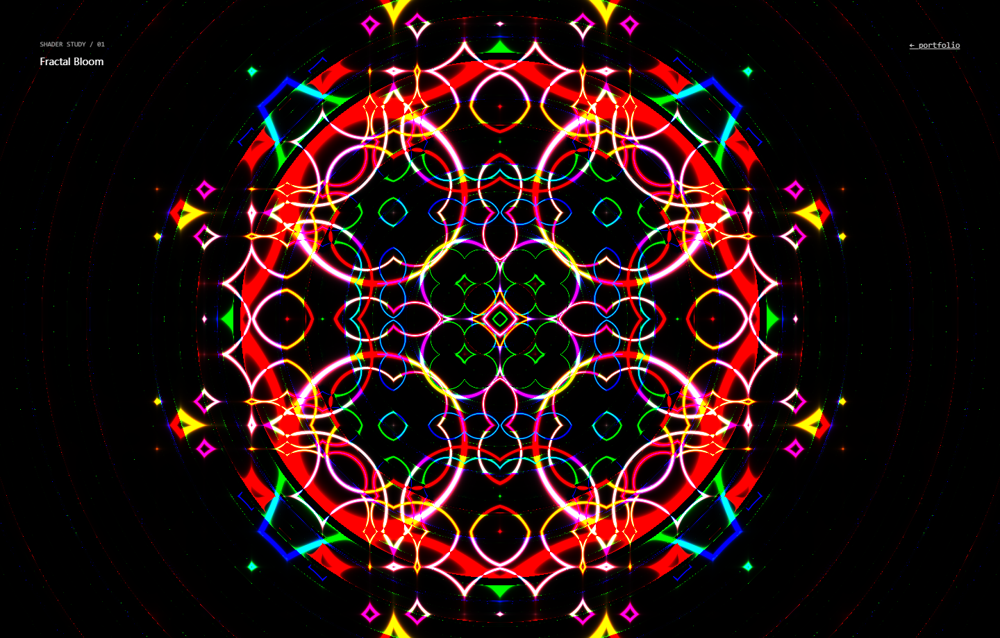
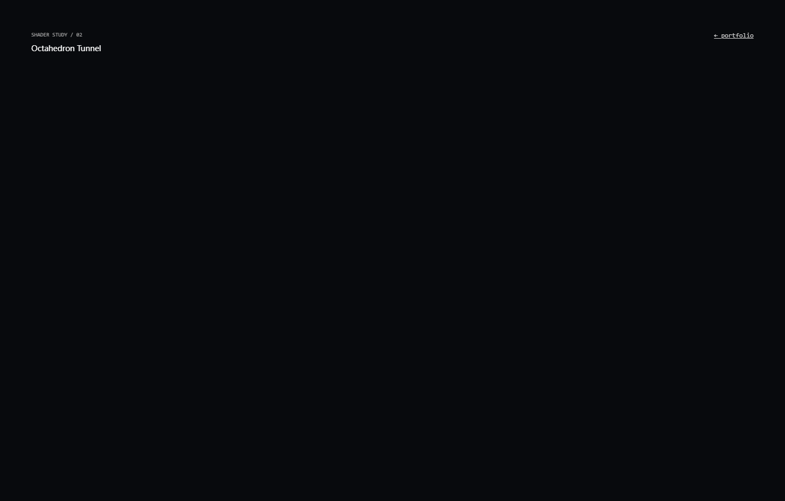
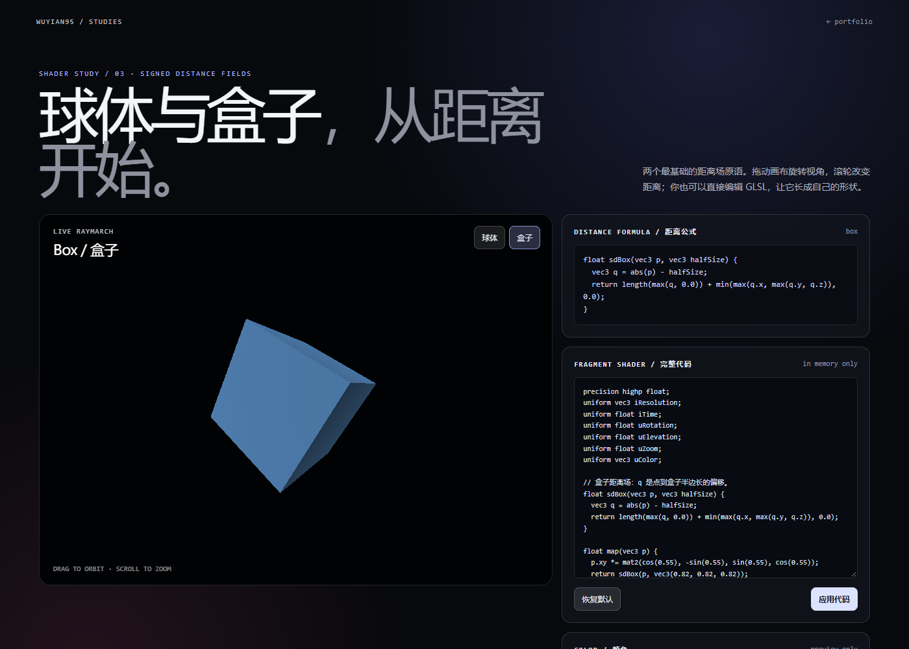

A TINY COLLECTION OF REAL-TIME EXPERIMENTS
Motion,color & light.
Three small worlds written in fragment shaders. Pick a study and let it run.
SELECT A STUDY
03 / 03
01 / FRACTALFractal Bloom
COLOR PALETTE · RECURSIVE FORMS

02 / RAY MARCHOctahedron Tunnel
SDF · INTERACTIVE CAMERA

03 / SDF LABSDF Primitives
SPHERE · BOX · LIVE GLSL EDITOR